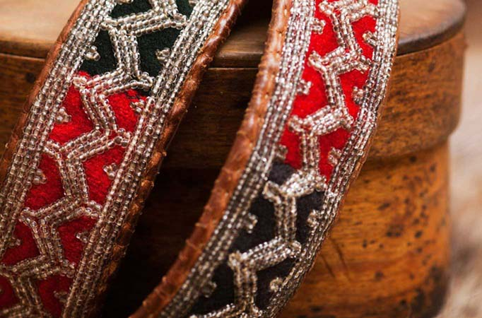

Duodji, artisanat Sami
La laponie est une région du monde où l'artisanat est omniprésent depuis des siècles. Le savoir-faire est considérable car ils fabriquent tous types d’objets. Les samis sont particulièrement connus pour leur maîtrise, touchant toutes les disciplines allant des objets en bois peints à la main, aux broderies Sami jusqu’aux accessoires en peau de mouton. Ils fabriquent de nombreux objets artisanaux grâce aux os de rennes et au cuir tels que des bracelets, pendentifs, couteaux ou sacs. L’artisanat fait pas les femmes Samis sont en général les bracelets, les vêtements, et sacs en écorce. Les hommes eux, font principalement des couteaux et travaillent le bois.
Le commerce
L'élevage de renne n’étant plus une activité suffisante pour vivre, les Samis font parfois du commerce pour avoir un revenu supplémentaire. On peut maintenant acheter des "Duodji" (le nom par lequel on désigne collectivement l’artisanat sami) en Laponie, le marché d’hiver de Jokkmokk est réputé pour les ventes et expositions de la culture Sami.
Les problèmes liés à la commercialisation du Duodji
Les Samis doivent faire face à de nouveaux problèmes dû à la mise en vente de leur artisanat. En effet, il existe maintenant des ventes de faux produits Sami alors le peuple a dû créer un label pour prouver l’authenticité des produits. Certains utilisent le costume traditionnel à des fins mercantiles. Dans le passé, porter le joik suscitait des oppressions aux Samis et aujourd’hui certains l’utilisent pour susciter de l'intérêt; par exemple une année, la miss Finlande avait porté ces vêtements, alors qu’elle n’appartient pas au peuple, dans le but de faire porter l’attention sur elle.
Anecdote
Une amitié est née entre les Samis des montagnes et ceux de la côte grâce à leur artisanat. En effet, les Samis de la mer tissaient des couvertures en laine parce qu’ils avaient de la laine disponible et les Samis des montagnes avaient suffisamment de viande de rennes pour en donner. Alors les samis de la côte échangeaient leurs couvertures contre la viande des Samis du nord.